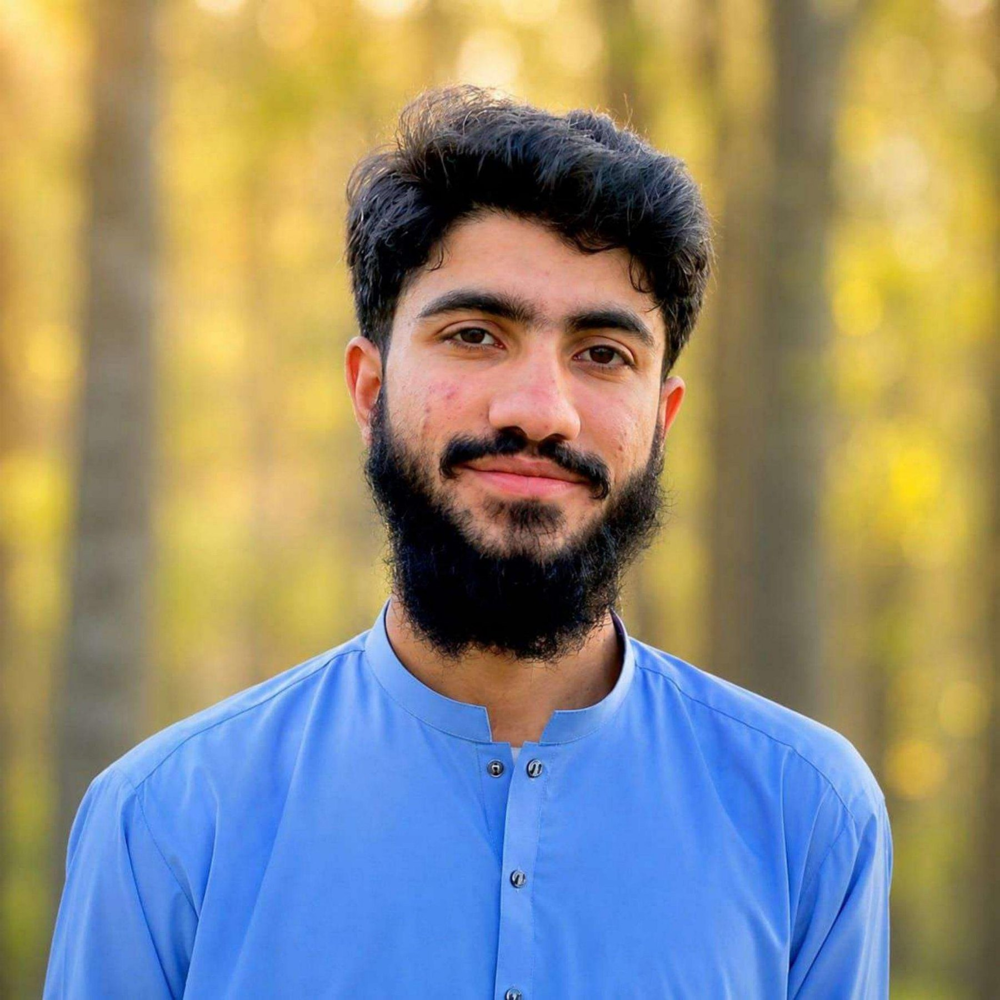
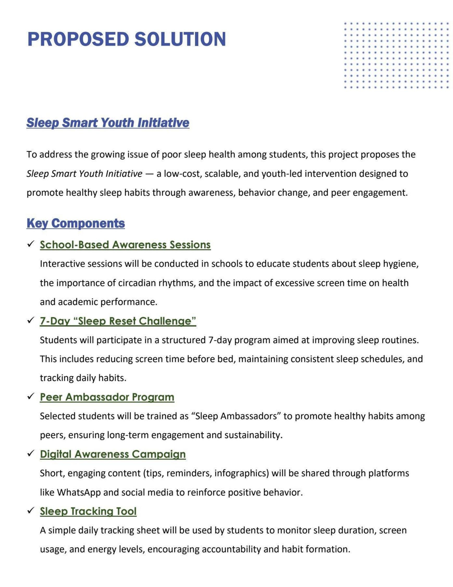
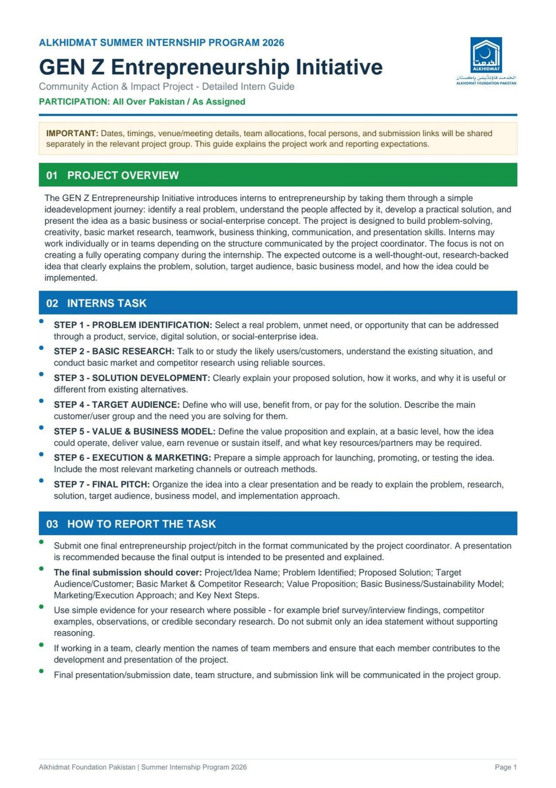
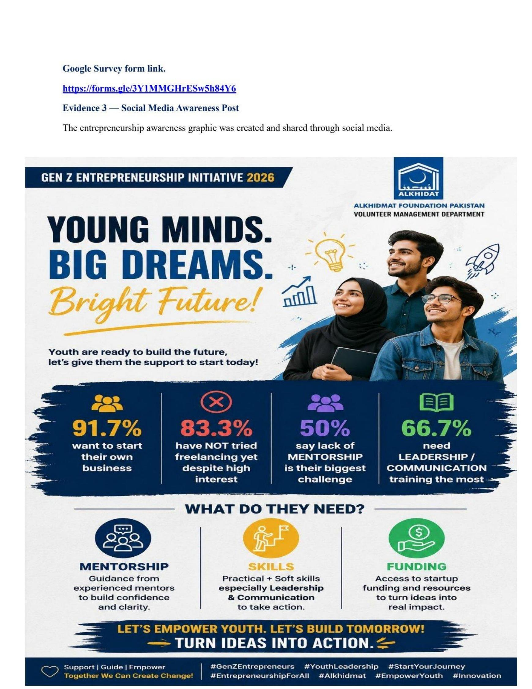
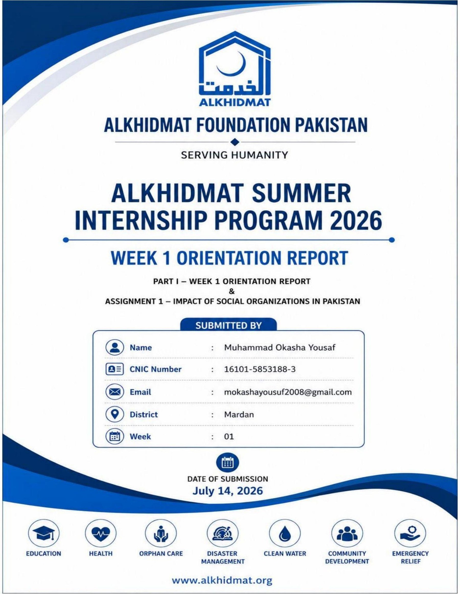

Matriculation
1064 / 1100
PRE-MEDICAL STUDENT • PAKISTAN 🇵🇰
I am Muhammad Okasha Yousaf, a pre-medical student building a pathway toward medicine through academic excellence, health-focused learning, humanitarian service, education, international exposure, leadership, and digital skills.

To combine scientific learning with compassionate service and grow into a physician who contributes to healthier, more resilient communities.
01 / ABOUT
I come from a strong pre-medical foundation at Islamia College Peshawar. Alongside academic preparation, I have intentionally developed experience in teaching, community service, humanitarian learning, public speaking, international programs, project work, and digital/AI skills.
My interests connect medicine, public health, education, leadership, community resilience, and technology. I value opportunities that ask me to learn deeply, communicate clearly, work responsibly with others, and turn knowledge into useful contribution.
02 / ACADEMICS
The strongest current academic and language indicators in my portfolio.
1064 / 1100
1101 / 1200
Current score
C2 Proficient • CEFR
03 / EXPERIENCE
INTERNSHIP • HUMANITARIAN & COMMUNITY SERVICE
Alkhidmat Foundation Pakistan • Volunteer Management Department
Completed the internship with practical exposure to humanitarian learning, emergency preparedness, digital skills, community action, volunteer mobilization, reporting, documentation, and project work.
SOCIAL IMPACT • PROGRAM
CSR Forum Pakistan
Completed a structured social-impact program focused on leadership, community engagement, collaboration, social responsibility, and practical impact thinking.
EDUCATION
The Urban School, Gujrat
Teaching matric-level Biology and Chemistry while strengthening explanation, communication, classroom management, mentoring, and science communication.
04 / IMPACT & PROJECTS
Selected work from community and internship activities, with project documentation available for review.

A youth-oriented project exploring sleep health, academic performance, awareness, inclusion and practical action.

Project work involving survey design, startup ideas, social-media awareness and evaluation.

A communication and awareness piece using youth-focused design, clear messaging, and storytelling.

Selected Alkhidmat documentation showing structured reporting, reflection, activity records and project evidence.
Recorded assessment result from the internship project documentation.
05 / INTERNATIONAL LEARNING
International courses, conferences and interdisciplinary experiences that broadened my academic and professional perspective.
Health Resilience in Disaster: Community and Clinical Responses to Climate Risks.
Digital Brandscapes: The Strategic Impact of Communication on Global Tourism, including sustainable tourism, advocacy, social media campaigns and branding.
Virtual participation in Radical Compassion in Action for Justice, a global youth learning platform centered on compassion, justice and meaningful action.
International Student Conference on Public Speaking, strengthening communication, confidence, idea-sharing and cross-cultural connection.
06 / INTERNSHIPS & PROGRAMS
Programs that added practical context to my academic and service journey.
Volunteer Management Department • 30 June–30 August 2026
CSR Forum Pakistan • 1 April–2 May 2026
The Urban School, Gujrat • Biology & Chemistry for matric-level students
See experience ↗Official completion letter confirming the internship under the Volunteer Management Department.
07 / DIGITAL SKILLS
Digital and AI learning that supports communication, creativity, entrepreneurship and future-ready work.
11 structured learning sessions across AI fundamentals, video, graphics, coding, productivity, prompt engineering, marketing, responsible AI, research and academic writing.
Practical training through the DigiSkills program with Virtual University, Ignite and the Ministry of IT & Telecom ecosystem.
Practical training in freelancing through the DigiSkills program.
Online learning on AI-powered content, storytelling and advocacy.
08 / WEBINARS, CONFERENCES & VOLUNTEERING
Selected participation, service and learning activities that sit alongside my formal experience.
09 / ACHIEVEMENTS
The Urban School • 14 August 2025
Among science educators • 18 October 2025
International Literacy Day • 8 September 2026
Health resilience in disaster
Recorded assessment result
Current score
72/100 overall
10 / VERIFIED EVIDENCE
A public-safe evidence library. Each certificate includes a large-view option so the document remains readable.
Public portfolio rule: identity documents, passport/CNIC numbers, family records, scholarship paperwork, recommendation letters and other sensitive records are intentionally excluded.
11 / SKILLS
Public Health • Community Health • Disaster Management • First Aid • Health Education
Volunteer Management • Community Engagement • Teamwork • Project Planning • Social Responsibility
Artificial Intelligence • Prompt Engineering • AI Content Creation • Video Editing • Freelancing
Teaching • Public Speaking • Science Communication • Written Communication • Presentation
12 / WHY MEDICINE
Medicine is the direction in which I want to bring together my academic preparation, scientific curiosity, communication skills, and service experience.
My long-term aspiration is to become a physician with a strong cardiovascular focus, while staying grounded in public health, prevention, community resilience, and service to Pakistan.
13 / CONTACT
For scholarship, university, educational, leadership, volunteering and collaboration opportunities, the best way to reach me is through email or LinkedIn.